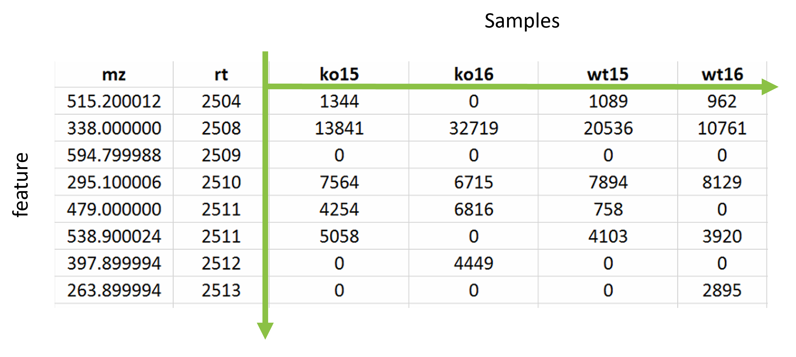

Metabolomics data is typically analysed as a matrix of intensities where one axis is for the samples that were analysed and the other for the features. Features being a specific m/z at a specific retention time.

The full data processing from raw mass spectrometry data to usable omics data matrix for grouping is beyond the scope of this tutorial. Instead we will work with a few key data matrices that have undergone standard metabolomics data processing.
In brief the following steps were performed:
The full details of the data processing methods are found in the supplemental of Cefic MATCHING publication (Viant et al. 2024).
The HILIC_POS assay for male rodents was used as an example for this practical with the following relevant data files for the training available on the github site:
Let’s start with the pre-filtering and pre-normalisation dataset and show what a typical metabolomics data matrix looks like.
And let’s read in the our first intensity matrix
hilic_pos_all <- read.csv(file.path(root, 'data/HILIC_POS_male/1_unfiltered.csv'))Again, head can be used for a quick check and
View can be used to view in more detail.
The first column is a reference to the m/z and retention time of a feature and the columns are the samples.
Lets check how many samples and features we have for this data matrix.
# feature count
feature_c_all = nrow(hilic_pos_all)
# sample count
samp_c_all = ncol(hilic_pos_all)-1
feature_c_all
samp_c_all## [1] 12123
## [1] 112We can compare this the the filtered data matrix to see how many features have been removed due to the standard processing steps
hilic_pos_f <- read.csv(file.path(root, 'data/HILIC_POS_male/2_filtered.csv'))For this dataset we should see that only 1 sample will be removed (the blank sample - as it is no longer required for furher analysis) and substantial number of the metabolite features will have been removed that were deemed not suitable for further analysis.
# feature count
feature_c_f = nrow(hilic_pos_f)
# sample count
samp_c_f = ncol(hilic_pos_f)-1
c('All samples:', samp_c_all)
c('Samples removed:', samp_c_all-samp_c_f)
c('Remaining samples:', samp_c_f)
c('All features:', feature_c_all)
c('Features removed:', feature_c_all-feature_c_f)
c('remaining features:', feature_c_f)## [1] "All samples:" "112"
## [1] "Samples removed:" "1"
## [1] "Remaining samples:" "111"
## [1] "All features:" "12123"
## [1] "Features removed:" "4797"
## [1] "remaining features:" "7326"Now that we have a better understanding of metabolomics data matrices we can briefly explain the quality assessments before getting started on the statistical analysis.